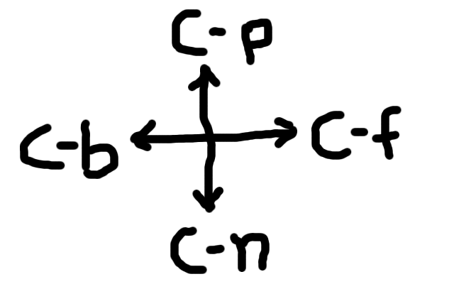

GNU Emacs


$ emacs &
$ emacs -nw
Control keyAlt key, Esc key, Meta key---
Control-key + aAlt-key + xControl-key + x , Control-key + cC-h t

C-a
C-e
* F3: to start recording * F4: to stop recording * F4: use macro
M-c
M-u
M-l
Ctrl + SPACE
M-<M->C-wM-wC-yM-x ispellC-xf
1. org-mode 2. *-mode
1. M-x customize 2. M-x customize-group 3. M-x customize-theme 4. M-x customize-face
M-x list-packages
Choose your package(s)
i
Install selected packages
x
/